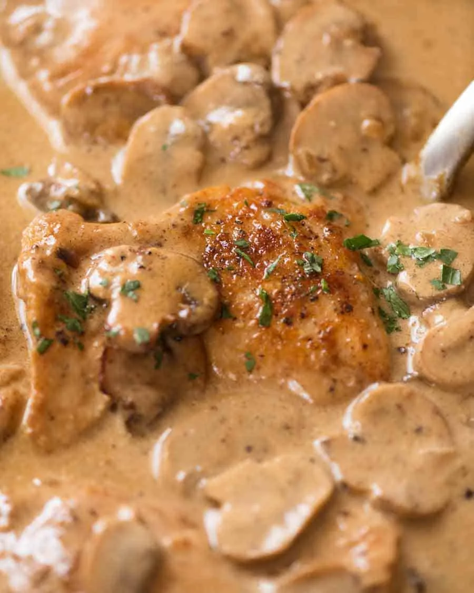

Chicken Stroganoff

Chicken Stroganoff is everything you know and love
about Beef Stroganoff… except it’s made with
chicken! Golden seared chicken thighs or breast
smothered in a sour cream Stroganoff Sauce, this is
a quick dinner you can get on the table in 20
minutes.
Ingredients
- Chicken Thighs
- Yoghurt
- Dijon Mustard
- Beef Broth
- Mushrooms
- Flour
- Butter
- Garlic Powder
Instructions
- Season Chicken with garlic powder and salt
- Brown Chicken, and remove from pan
- Saute Mushrooms, then remove
- Make roux using butter and flour
- Deglaze using beef broth, add mustard, and mushrooms. Reduce
- Add Chicken and Yoghurt
- Serve with rice or pasta
Index